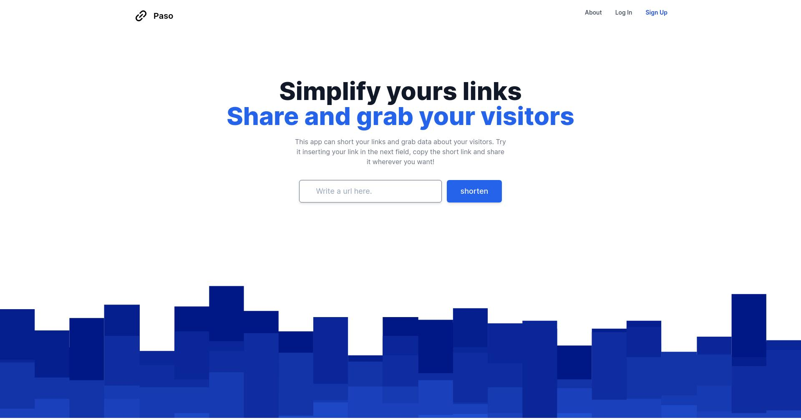

ComoCambio
ComoCambio is a platform part of a Cencosud's program for promote a healthy culture. I started this project two years ago and I actively participate as a back-end developer and DevOps engineer for Zeeers.


Paso App
A URL shortener that can also collect information about visitors. This project is made using my other open-source project RailsUrlShortener and is only intended to show its implementation..


Iamindexed
A small app that helps you Scraping in different search engines to know if your site is indexed or not. The idea comes from the need to quickly find out if my sites were indexed or not.

AcogerEs
An administration panel to manage data on foster families for Fundación AcogerEs. The project included data cleansing and uploading of more than two thousand families and a mailing campaign.

Minitest-cc
Plug-in for the Minitest unit test framework. Displays information about the coverage of the tests on the package or application code. A much simpler option to SimpleCov.
RailsUrlShortener
Engine for Rails that adds full URL-slicing functionality. By simply installing this gem in any Rails application you can start URL slicing and get useful information about its usage (ip, geolocation, device, etc.).